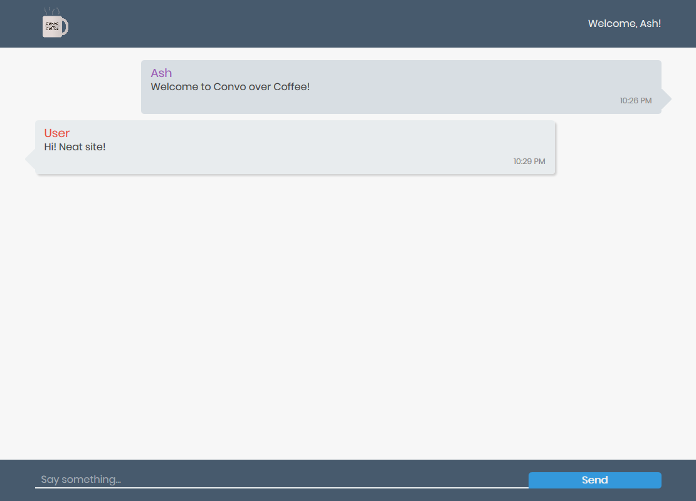

View Site
Convo / Coffee
HTML
CSS
Javascript
React
Sass
Firebase
A basic chat application built using React and Firebase. Built to better understand syncing state to Firebase and general React concepts. Create/join a room, choose your name, and get chatting!
View on Github